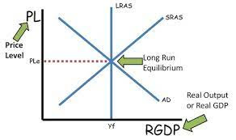
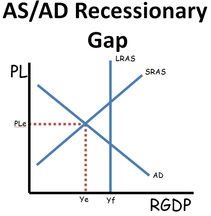
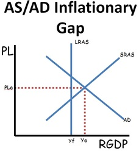

GDPr
GDPr is the total value of all final goods and services produced within a nation in a year. It is adjusted for inflation.
The equation for GDPr is C + I + G + Xn, or Consumption, Investment, Government Spending, and Net Exports.
Only final goods and services are counted within the GDPr. Intermediate goods and services, non-market production, "black market", and purely financial transactions are not included.
AD/AS Graph

The AD/AS graph has GDPr on the x-axis and the Price Level on the y-axis. The Y stands for output and the P stands for price.
Aggregate Demand
Aggregate Demand is an inverse relationship between Price Level and GDPr.
The shifters of AD are Consumption, Investment, Government Spending, and Net Exports, or the factors of GDPr.


A left shift in the AD graph causes a decrease in Price Level and Output.
A right shift in the AD graph causes an increase in Price Level and Output.
Aggregate Supply
Aggregate Supply is a direct relationship between Price Level and GDPr.
The shifters of AS are Input Prices, Productivity, and Legal-Institutional Environment.


A left shift in the AS graph causes an increase in Price Level and a decrease in GDPr.
A right shift in the AS graph causes a decrease in Price Level and an increase in GDPr.
Long Run Aggregate Supply

The LRAS is a curve that shows the relationship between price level and real GDP that would be supplied if all prices, including nominal wages, were fully flexible. The curve is vertical because wages are only sticky in the short run. It represents full employment.
The shifter for LRAS is labor force growth. It also determines where the natural rate of unemployment is.
Expansionary Fiscal Policy

Expansionary fiscal policy is used to combat recession. With it, government spending is increased and taxes are decreased.
AD →, GDPr ↑, PL ↑, inflation ↑, and unemployment ↓.
Contractionary Fiscal Policy

Contractionary fiscal policy is used to counter inflation. With it, government spending is decreased and taxes are increased.
AD ←, GDPr ↓, PL ↓, inflation ↓, and unemployment ↑.
Discretionary Fiscal Policy
Discretionary fiscal policy is increasing or decreasing government spending and/or taxes in order to return the economy to full employment. Discretionary policy involves policy makers doing fiscal policy in response to an economic problem.
Automatic Stabilizers
Unemployment compensation and marginal tax rates are examples of automatic policies that help mitigate the affects of recession and inflation. Automatic fiscal policy takes place without policy makers having to respond to current economic problems.
Cost-Push Inflation, Demand-Pull Inflation, and Stagflation

Both of Cost-Push Inflation and Demand-Pull Inflation create inflation.
Cost-push inflation is the decrease in the aggregate supply of goods and services stemming from an increase in the cost of production.
Demand-pull inflation is the increase in aggregate demand, categorized by the four sections of the macroeconomy: households, business, governments, and foreign buyers.
Stagflation is persistent high inflation combined with high unemployment and stagnant demand in a country's economy.
Keynesian Economics
The economy could be operating above full potential in an expansion or below full employment in a depression instead. The Keynesian Model tends to more accurately describe overall economic growth in the short term.
Marginal Propensity to Consume (MPC)
The Marginal Propensity to Consume is the fraction of any change in disposable income that is consumed.
The equation for MPC is (Change in Consumption)/(Change in Disposable Income).
MPC + MPS = 1, MPC = 1 - MPS, MPS = 1- MPC
Marginal Propensity to Save (MPS)
The Marginal Propensity to Save is the fraction of any change in disposable income that is saved.
The equation for MPS is (Change in Savings)/(Change in Disposable Income).
MPC + MPS = 1, MPC = 1 - MPS, MPS = 1- MPC
Spending Multiplier
The Spending Multiplier is the initial change in spending (C, I, G, Xn) that causes a larger change in aggregate spending, or AD. The reason why this happens is because expenditures and income flow continously, which sets off a spending increase in the economy.
The equation for the Spending Multiplier is either 1/1 - MPC or 1/MPS.
The Spending Multiplier is also known as the Government Spending Multiplier, the Income Multiplier, or the Investment Multiplier.
Tax Multiplier
The Tax Multiplier is the opposite of the Spending Multiplier, where the Money Supply decreases when the government taxes.
The equation for the Tax Multiplier is either -MPC/1 - MPC or -MPC/MPS.
Crowding Out/In
Crowding Out is when a government engages in deficit spending, they pay for it by borrowing money, As a result the real interest rates increase as the demand of loanable funds increases. When this happens private investment decreases thus causing crowding out.
Crowding In relates to how higher government spending encourages firms to invest more. This is because expansionary fiscal policy can increase the economic growth rate and create a positive multiplier effect which leads to more private investment.
Loanable Funds Graph

The loanable funds graph represents the market where saves and borrowers exchange funds at the real rate of interest.
The demand for loanable funds, or borrowing comes from households, firms, government and the foreign sector. The demand for loanable funds is in fact the supply of bonds.
The supply of loanable funds, or savings comes from households, firms, government and the foreign sector. The supply of loanable funds is also the demand for bonds.
Loanable Funds Graph Shifts
The shifters for the loanable funds graph is government spending and demand of investment.
When the demand for loanable funds increases, borrowing increases, causing the real interest rate and quantity to increase.
When the demand for loanable funds decreases, borrowing decreases, causing the real interest rate and quantity to decreases.
When the supply of loanable funds increases, saving increases, causing the real interest rate to decrease and the the quantity to increase.
When the supply of loanable funds decreases, saving decreases, causing the real interest rate to increase and the the quantity to decrease.